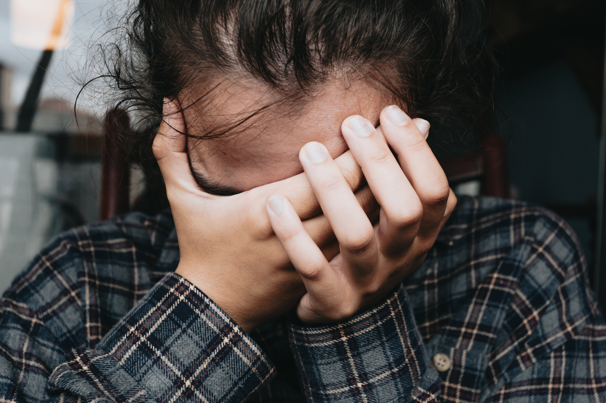

Popular Post

Bahagia tidak harus mahal
Sept 15, 2023
Jangan berlarut dalam kesedihan
1 Desember 2023

Alasan Mental health penting
1 Desember 2023
Kehidupan penuh tantangan dan kesulitan, mengantar kita pada kesedihan yang dalam. Meski begitu, setiap badai pasti berlalu, membawa terang di ujungnya. Artikel ini mengajak pembaca untuk menemukan kekuatan internal, mencari dukungan, dan mengusung sikap positif dalam mengatasi kesulitan. Dengan fokus pada perjalanan kesembuhan emosional, kita bisa melewati masa sulit dengan tekad dan optimisme. Pesan utamanya: hadapi kesedihan dengan kepala tegak, melangkah maju menuju kehidupan yang lebih baik.

Guild Leader
Sept 15, 2023
1 Desember 2023
1 Desember 2023
1 Desember 2023
Hal ini mengajak kita untuk melihat bahwa kebahagiaan sering kali dapat ditemukan dalam hal-hal sederhana sehari-hari. Dari momen kecil, seperti senyum orang yang kita cintai atau matahari terbenam yang indah, hingga kepuasan dari prestasi pribadi, kita dapat menemukan kegembiraan tanpa harus menghabiskan banyak uang. Dengan mengeksplorasi sumber-sumber kebahagiaan yang terjangkau, kita dapat membuka pintu menuju kehidupan yang lebih memuaskan dan berarti. Jadi, mari temukan kebahagiaan tanpa harus menguras dompet kita!

Penulis